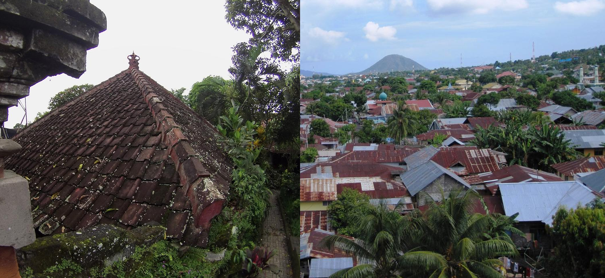
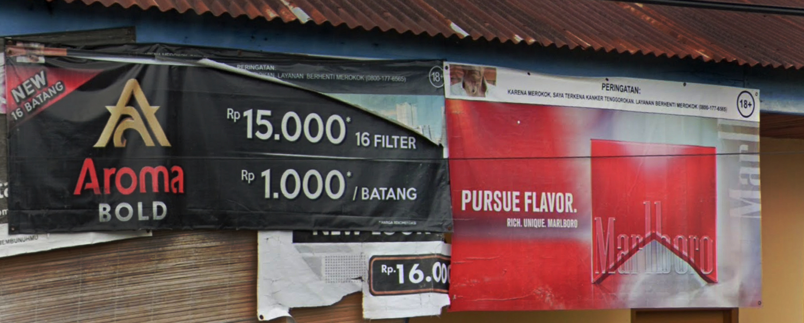
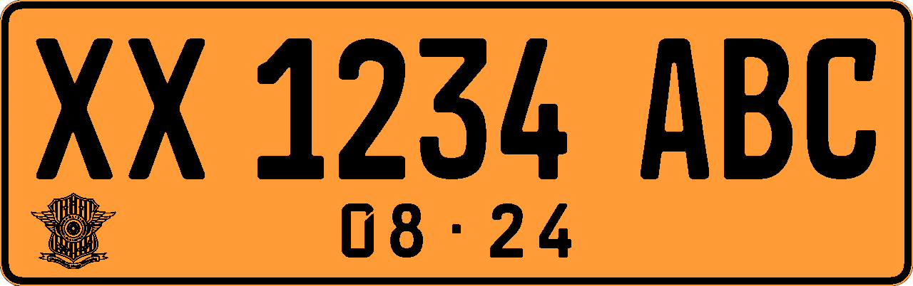
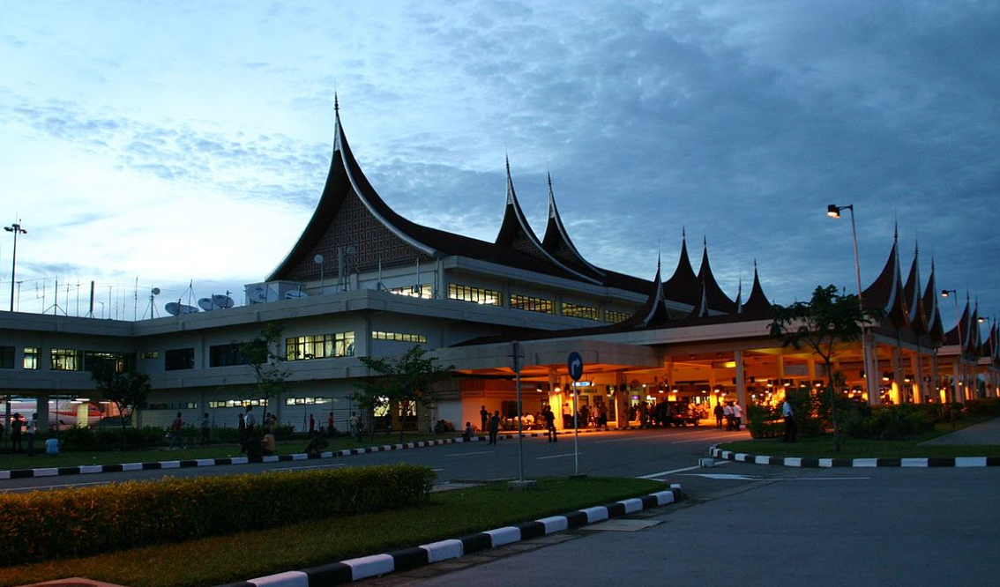

国・地域の見分け方
- ドメインは.id
- 車は左側通行
- 道端でタバコがよく売られていて家の前に赤と白の旗があることも(by Geotips )
- ナンバープレートに黒いものがあり一部は白い文字が３つに分かれて見えるかもしれない
- Alfamartというコンビニがたくさんある(参考文献 PT Sumber Alfaria Trijaya Tbk)
- 道路の中央分離帯が黄色の場合はマレーシアではなくインドネシアの可能性が高くなる
見つかる標識


By Yan Arief Purwanto from Yogyakarta, Indonesia - IMG_9328, CC BY-SA 2.0, Link




ナンバープレートは黒色のものが多くモザイクのかかり方によっては３つに分かれて見えるかも。マレーシアなら２つに分かれて見える。また黄色や赤色といった他の色のナンバープレートも存在する。マレーシアと迷っている時、モザイクが３つに分かれていたりバイクのフロントにもナンバープレートがあればインドネシアになる。
CC0

CC0
.jpg#/media/File:Bukit_Bego_(11).jpg)
By Fandy Aprianto Rohman - Own work, CC BY-SA 4.0, Link
インドネシア最大手の石油・天然ガス会社であるPT Pertaminaがあり看板に書いてある番号から地域もわかる(参考文献 Pertamina)。

By Yoshi Canopus - Self-photographed, CC BY-SA 3.0, Link
細い2車線道路。オレンジ線ならタイも考えてみる。

種類が多いので『インドネシアのボラード』に移動しました
ニッポン・インドサリ・コーピンド（Nippon Indosari Corpindo Tbk）はインドネシアのパンメーカー(参考文献 オフィシャルサイト)。
州・地域の絞り込み
- Kabupatenの位置を覚える（マップ、参考文献先で確認してください）(参考文献 Peta Indonesia HD PDF)
- 州は38個ある
「KAB」と略されることもある。この看板はCepuの地域(参考文献 Cepu, Blora)。
.jpg#/media/File:00_Papan_Nama_Terminal_Cepu_(1).jpg)
By id:User:Mujionomaruf - Own work, CC BY-SA 4.0, Link
州は38個ある。より細かい単位としてkabupatenがある。

By Bennylin - Own work, derived from File:Indonesia blank map colored.svg, CC BY-SA 4.0, Link
建築
- インドネシアには多数の民族があり文化や民族によって建物の見た目が異なる(from 『10 More Maps You NEED To Know for Geoguessr by zi8gzag』)(参考文献 インドネシアの伝統家屋一覧 / Rumah adat di Indonesia)
- plonkitのインドネシアのページが詳しいのでこれを見る
- 西スマトラ：屋根がそり曲がった感じのミナンカバウ族の伝統的なデザインの家
- 北スマトラ：バタック人文化の特徴的なデザインの屋根がある
- リアウ州：Lontiokと呼ばれる湾曲した屋根・高床式・入口までの奇数ステップの階段が特徴的な家がある(参考文献 Lontiok)
- バンテン州：Sulah nyandaと呼ばれるSuku Baduiの伝統的ない家がある(参考文献 Sulah nyanda)
- スンバ島：ウマ・マラプと呼ばれる高く突き出た屋根の家がある(参考文献 巨大なとんがり屋根の謎スンバ島の家屋【続・穀倉に住む】佐藤浩司＋小池誠)
いわゆるTongkonan-houseが見つかる(参考文献 トラジャ族の トンコナン･ハウス)。スマトラ島の北部で見つかるトバ湖周辺のトバ･バタック族の民家にとても良く似ている。

西スマトラ州にあるミナンカバウ族の伝統的なデザインの家(参考文献 Rumah Gadang)。母系社会であるミナンカバウでは母から娘へこの家が受け継がれるらしい。


{kind=link}
{kind=link}
街中ではほぼ見ないように思うのでジオゲッサーのヒントとしては活用しづらいかも。

By Fitri Penyalai - Own work, CC BY-SA 4.0, Link
Lontiokと呼ばれる伝統的な形の高床式の家がある。屋根の先端にはクロスが付いていることもある(参考文献 Lontiok)。

By Hermadiyansyah Putra St Bagindo - Own work, CC BY-SA 4.0, Link
ジャワ島では赤茶色の瓦屋根の家が多い。

By monica renata from jakarta - Tarung-Waitabar, CC BY 2.0, Link
- 農作物の分布が地域ごとに異なる
- コメ：確率的にはジャワ島（50％超）だが全域に見られる
- コーン：田んぼとコーン畑が同時にあるならジャワ島に行っていいと思う
- アブラヤシ：北スマトラやカリマンタン島に多い
- データ提供元：U.S. Indonesia Production Country Summary(U.S. Department of Agriculture)
- テルナテ島は島中央部にガマラマ山が見え、斜面に道路と家が並んでいる
- 市外局番が見つかり一緒に地名も見つかることが多い
- 街中で見かける08XXは場所がわからない。番号を探すために全ての看板を見るのは止めた方が良いように思う。電話番号・地名がセットで見つかることが多いので地名を覚えた方がいいように思う。
- 08は無視してジャカルタをスタートとして反時計回りに増える感じで覚えている
- 03x：東ジャワ
- 031x：Surabaya
- 036x：バリ島
- 0361：Denpasar
- 0380：Kupang
- 07x：南スマトラ
- 0751：Padang
- (参考文献 Telephone numbers in Indonesia)
- Pertaminaのガソリンスタンドの看板に書いてある番号から地域もわかる
- 1x~5x：番号が小さいほど北
- 6x：カリマンタン島
- 7x：スラウェシ島